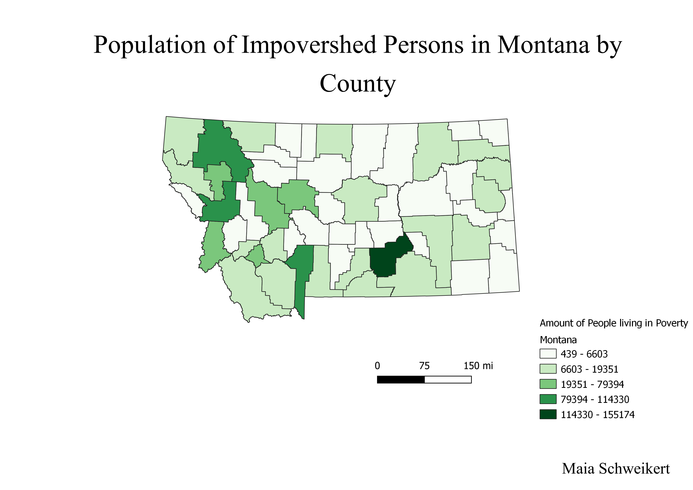

Homework 7: Census data choropleth
Maia Schweikert
The following map illustrates the distribution of people living in poverty throughout North Carolina by County. As the colors become darker in the respective counties, that indicates an increasing amount of people in poverty.

Data used for this project
CSV dataset
Link to shapefile